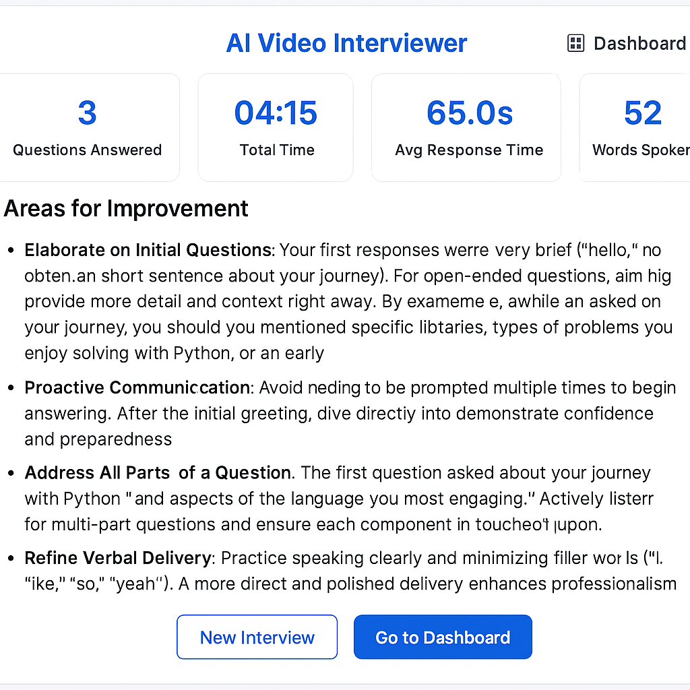
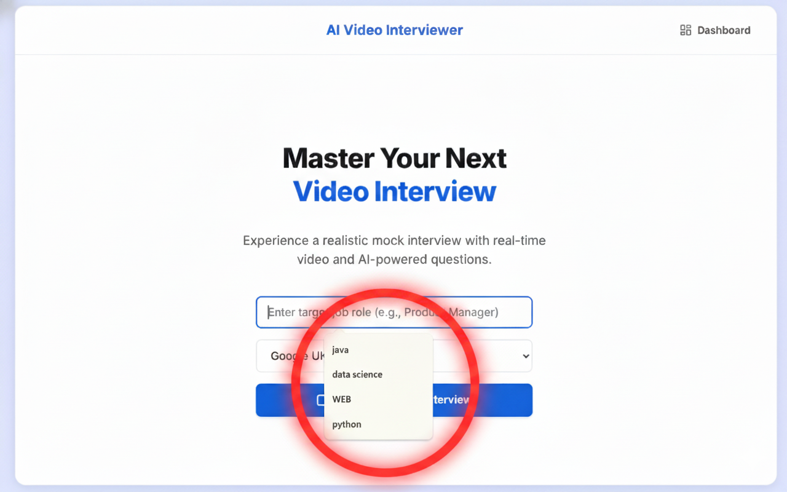
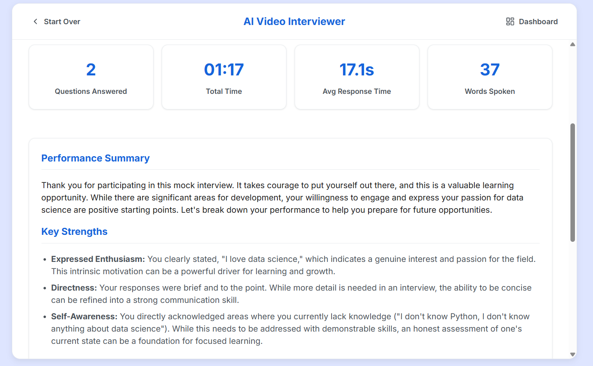

All the Tools You Need to Succeed.
Our AI platform is engineered using the latest behavioral science and large language models to provide the most realistic and effective interview practice available.
Voice and Tone Analysis
Go beyond what you say and focus on *how* you say it. Our sophisticated speech processing models analyze non-verbal cues critical for interview success.
- Vocal pacing and speed
- Confidence level and tone detection
- Filler word tracking (e.g., "um," "like," "so")

Role & Company Simulation
Stop practicing generic questions. Select your target role (Software Engineer, Marketing Manager, etc.) and even the company to tailor the entire interview experience.
- Adaptive question difficulty
- Industry-specific technical assessment
- Scenario-based behavioral questions

Comprehensive Performance Reports
After every session, you receive a detailed breakdown of your performance, highlighting strengths and specific areas needing improvement.
- Scorecards based on clarity and knowledge
- Transcript review with AI suggested answers
- Historical tracking to measure progress
